A man reading his poem to a lover who keeps his back turned watches him go off the fire escape, follows him down through the world's escapes into a party that will not hold him, and falls out of life.

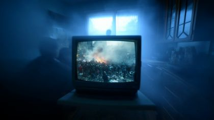

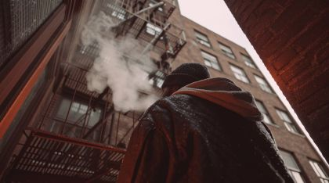
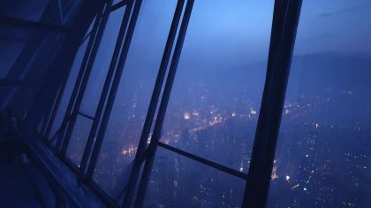
The poem
The poem opens with a disowning ('What we've made we don't want... doesn't exist') and becomes a search through a home turned maze: hallways, drawers, fire escapes. The love is 'tainted', a 'make-believe haven' over quicksand, an 'overnourished forest of escapism' that calls the EX away. The speaker commits to following anyway: 'I'll follow... to rediscover when love was real.' He admits failure ('I failed at protecting you from your own vices') and crashes 'the party of your evilest instincts'.
The hinge is 'trip on my own words, falling out of life, and find where you go when you leave' (L02-L03). His own words make him fall, and the title question becomes a place. The poem ends on the same phrase with a new verb, 'landing into the secret', so the fall turns out to be a way of arriving. Governing images: the back turned to him ('With your back faced against me'), the words he trips on, the drop, and 'sweet memories and photographs, film and fiction that leave me empty', which makes the archive footage part of the poem's own material.
Look
Cold practical light: TV glow and city spill through glass. The puppet is lit from the window side so his face card reads against blue. Haze is layered tracing paper and torn vellum on separate rails, not a digital blur, so every layer has an edge. Cards are dark corrugated board with the flutes showing through thin gouache. The vintage party is the exception: POET stays in full colour while the ballroom and its painted dancers are silver-grey, as if he has fallen into an old film.
Our best elements
The strongest things we already have for this poem: generated footage, Atlantis views, found film and painted kit sheets.
passage plate for L03 and the 01.2 haze push-in
No figure in it. Floor-to-ceiling vertical panes over a teal city, with a bed and lamp for scale. This is the surface type that reads best.
01.1a TV with world chaos, cutaway insert
The TV is already burning inside the haze. Cut its screen out and an archive film can play inside it.
01.3a EX goes over the rail; the haze from outside
Steel stair, brick and a wall of cloud. The small figure at the rail can be cropped out or kept as a distant EX.
reference for EX pose and vape plume; 01.1c
Shows the vape plume rolling off the shoulder, which is the image the treatment asks for. The costume needs reconciling with the olive bomber.
alt window plate, fire_escape_night from inside
Strong diagonal mullions and a deep city below, with no figure. Gives the vertigo before the fall.

01.3c city_fall_void background
Towers converge on a white vanishing point. A falling card reads against it, and the facades scroll for city_streak_up.

escape_screens source in the fall
Many panes in one image. Lift individual screens out as floating cards.
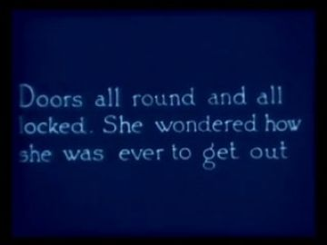
hallway door for L02 'a way out through the hallways'
'Doors all round and all locked... how she was ever to get out' says the line back to him in a 1915 voice.
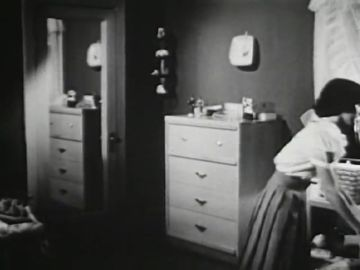
inside the drawer / bedroom memory
A domestic room of chests of drawers. It literalises 'within the drawers'.
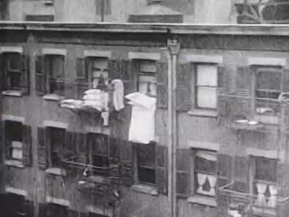
facing building behind EX; fire_escape_night far layer
Laundry and iron escapes on a brick face. A real fire escape in archive grain, and the facade is bright enough to read.

vintage_party plate, 01.4a landing
A dense period ballroom with tables and dancers. POET lands into the film itself.

01.4b crowd, and the source film of the passage answer
The same film that says 'You can't leave us out here', so the party ties back to the passage.

L05 'overnourished forest of escapism that calls for you'
A forest seen through a frame: a window into escapism that can float in the void.

T01-02 push through the pupil into 02
Sharp, warm iris that the camera can push into, matching the scene book's exit.
What we need
- Figure-free bedroom plate with a REAL fire escape outside the window. gen_a63bb494b1 has a glass wall and no escape; gen_c6c0d07b96 and gen_fcbfcc8b21 have generated men in them.
- All POET and EX body cards are still empty layouts. The black tee, EX olive bomber and the 01 poses (reach, fall, crouch, run, trip) need painting.
- POET falling replacement bodies: head-down braced, tumbling, reaching down. None exist.
- EX costume conflict: the pack says olive bomber; gen_5de22bb8b5 and gen_c6c0d07b96 show a hooded parka or hoodie. Choose one and repaint.
- Archive for the escapes: drugs/pills, phone feeds, rave. Nothing in the found set shows pills or phones; search drug-education films (1960s-70s).
- Bright colour archive for the vintage party light leaks. Most party archive is dim B&W; Apollo Soyuz 1975 dancers are the only colour.
- Parquet floor card with the hole, and a figure-free ballroom far layer for compositing.
- Vape pen and ember card plus haze rigs. No vape footage is usable as a clean insert.
Characters
POET kit →
the speaker: reads his poem to the EX's back, searches the room, follows him off the fire escape and through the party
Costume. plain black crew-neck tee, dark trousers, plain dark sneakers, no glasses. Paint a little lint-grey on the tee's shoulder seams so the black separates from the night.
Expressions. sad (reading), listening (reflection), surprised (drawer click, landing), strain (haze, reaching), afraid (falling), down (passage release)
Hands. grip(poem_page), grip(drawer), open (reach), relaxed, flat_push (landing, crowd), claw (trip), stopped-open (palm a hand-width from glass)
Cards to paint. black tee torso x4 views (painted); falling head-down body; tumbling body; deep crouch landing; head: sad, listening, strain, afraid, surprised, down; hand: grip(page), stopped-open, claw, flat_push
poet.01.action has the right five pose boxes and five hands, but every box is empty, and it lacks the 01.1 reading stance and the passage's stopped hand. Panel B shows a black piped track jacket and sunglasses, which contradicts the 'black tee, no glasses' text on the pack sheets. Follow the text. The head reference is right.
Its action sheet for this poem is on Character Kits v2.
open the action sheet →| action | beats | how the card does it |
|---|---|---|
| hand stops short at the glass (L03) | shoulder drops, eyes to window → forearm rises toward pane → halts a palm-width off, fingers loose → fingers curl to relaxed as the archive answers | upper arm and forearm rotate on shoulder and elbow brads; swap the open hand to the relaxed card on the release; swap the head from strain to down on 'leave' |
| reads the page aloud | page lifts to chest → head tilts to page → holds, small breath bob → page lowers as he looks to the window | L hand grip(page) card with the page on its own brad so it can flutter; 1-2 px torso bob; head card sad, then listening |
| yanks the drawer | lean in → drawer slides out on a slot → head snaps to profile at the click → turns back | drawer is a sliding card behind a dresser occluder; head replacement profile-surprised for 4 frames |
| falls head-down behind EX | tips over rail → inverts → holds the reach down → slow tumble | whole-body falling replacement card rotated on the hip brad; one free arm on a brad for the reach; afraid head |
| crash-landing and trip into the hole | drop in → deep crouch, one hand flat → rise and push through dancers → foot catches, pitches into hole | deep-crouch replacement + flat_push hand; profile fall card with claw hands slid behind the parquet occluder |
EX kit →
the man who leaves: a back at the fire-escape rail, then a falling back, then a back between dancers
Costume. dark olive bomber with ribbed hem, dark jeans, white low sneakers; vape pen in the right hand. Paint the back of the head with the nape and at most one ear.
Expressions. unseen: back-of-head card only, head tilt up (exhale)
Hands. pinch(vape_pen), relaxed, open (falling)
Cards to paint. back body painted (olive bomber); threequarter_back walk; falling back, arms open; lean on rail (one hip); hand pinch(vape) painted
ex.01.action has lean·back and fall·back only, both empty. The back-of-head card in panel B is good: nape, faded hair, no face. It needs a threequarter_back walk for the party.
Its action sheet for this poem is on Character Kits v2.
open the action sheet →| action | beats | how the card does it |
|---|---|---|
| exhales over the city | head tilts back → plume card slides off the shoulder → hold → head returns | back-of-head card rotates a few degrees on the neck brad; a vellum plume card travels on a rail behind the shoulder |
| tips over the rail | weight on one hip → torso pivots over the rail occluder → arms open → drops out of frame, ember still lit | whole body rotates on a pivot brad set at rail height; arms swap to open cards; the ember is a code-drawn glow tracked to the hand |
| vanishes in the crowd | walks away → glimpsed between dancers → strips drop out → gone | threequarter_back card sliced into 6 vertical strips that fall away one by one |
PARTY, CLUB AND DJ kit →
vintage party guests waltzing in slow motion, unbothered by his crash
Costume. 1930s evening wear in silver-grey gouache: bias-cut gown and tails. Monochrome so the cards sit inside the B&W archive ballroom.
Expressions. joy (closed-eye), unbothered
Hands. open, grip (partner)
Cards to paint. waltzing couple profile; spinning single guest threequarter; grey palette heads x3
party.01.action has two empty dance boxes. vintage_party body packs exist as layouts. Specify the grey palette, or they will be painted in colour and fight the archive.
Its action sheet for this poem is on Character Kits v2.
open the action sheet →| action | beats | how the card does it |
|---|---|---|
| slow-motion waltz | step → turn → rise → step, each held 4 frames | a couple joined on one shared brad at the clasped hands, rotating as a unit; step-printed motion |
Props
Sorted by priority. Each has its design, how to build it, the references found in the archive and our footage, and a prompt for its card sheet.
steel fire-escape landing rail and stair
near occluder, 110 cm rail; black-painted steel with rivet dots; one piece with a slot for the EX's pivot
Generation prompt
Prop card sheet: black steel fire-escape landing rail with a section of stair, flat corrugated-cardboard card, gouache + confident ink line, raw kraft cut edge, brass brads where it hinges, flat-on even light, plain background. Cards: (1) straight rail section, (2) stair flight, (3) corner rail.
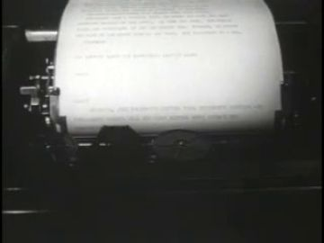
single creased printed sheet: the poem
28 cm; off-white card with ink lines of text; states: flat, creased, letters peeling off (for falling_words)
References found

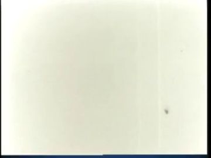


Generation prompt
Prop card sheet: a single creased printed poem page, flat corrugated-cardboard card, gouache + confident ink line, raw kraft cut edge, brass brads where it hinges, flat-on even light, plain background. Cards: (1) page flat, (2) page creased and curled, (3) page with loose cut-paper letters lifting off its lines.
CRT on a low stand showing world chaos
60 cm box CRT (matching gen_2a594d9e83, not a flat TV); screen cut out so archive or gen footage plays behind; states: on, off-grey, static
References found

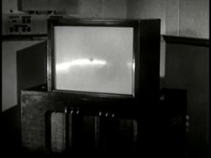

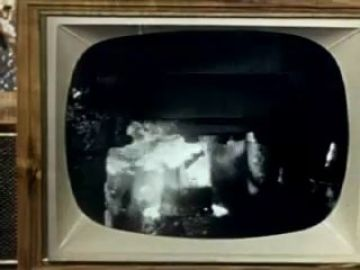
Generation prompt
Prop card sheet: 1990s box CRT television on a low stand, flat corrugated-cardboard card, gouache + confident ink line, raw kraft cut edge, brass brads where it hinges, flat-on even light, plain background. Cards: (1) TV with screen cut fully open, (2) TV with dark grey screen, (3) low stand separately.
slim black vape pen with amber tip
12 cm; black card with a cut-out window for the ember; states: ember lit, ember dark
References found
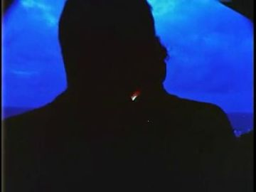


Generation prompt
Prop card sheet: slim black vape pen, flat corrugated-cardboard card, gouache + confident ink line, raw kraft cut edge, brass brads where it hinges, flat-on even light, plain background. Cards: (1) pen with glowing amber tip, (2) pen with dark tip, (3) small vapour plume shape in pale grey-white tissue.
bedroom window onto the fire escape
tall sash window, 150 cm; separate glass layer of acetate for reflection and archive; states: open sash, closed
Generation prompt
Prop card sheet: tall double-hung bedroom window frame, flat corrugated-cardboard card, gouache + confident ink line, raw kraft cut edge, brass brads where it hinges, flat-on even light, plain background. Cards: (1) frame with both sashes closed and panes cut open, (2) lower sash raised.
top drawer of a plain wooden dresser, brass pull
60 cm; drawer front card slides on a slot in a dresser card; states: closed, pulled open empty
References found
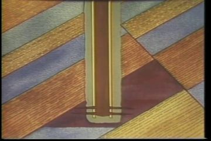

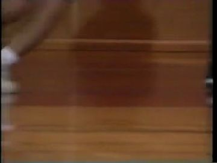


Generation prompt
Prop card sheet: plain wooden dresser with brass pulls, flat corrugated-cardboard card, gouache + confident ink line, raw kraft cut edge, brass brads where it hinges, flat-on even light, plain background. Cards: (1) dresser body with top drawer slot open, (2) drawer closed, (3) drawer pulled out, empty interior.
floating phone- and TV-shaped panes in the fall
frames only, 15-80 cm; phone, CRT and flat-panel bezels with open screens carrying footage
References found
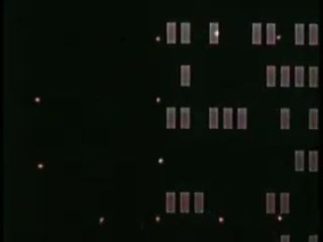

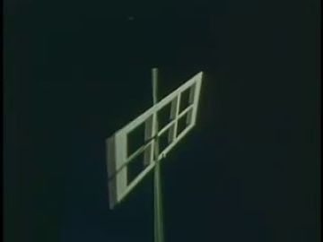
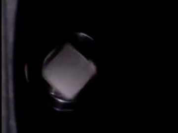

Generation prompt
Prop card sheet: empty screen bezels with open centres, flat corrugated-cardboard card, gouache + confident ink line, raw kraft cut edge, brass brads where it hinges, flat-on even light, plain background. Cards: (1) smartphone bezel, (2) box CRT bezel, (3) flat-panel bezel, (4) small handheld TV bezel.
party floor with a hole opening in it
parquet card 200 cm wide; states: whole, cracked, hole open with ragged kraft edge
Generation prompt
Prop card sheet: herringbone parquet floor section, flat corrugated-cardboard card, gouache + confident ink line, raw kraft cut edge, brass brads where it hinges, flat-on even light, plain background. Cards: (1) whole floor, (2) floor with crack, (3) floor with a ragged hole cut through to black.
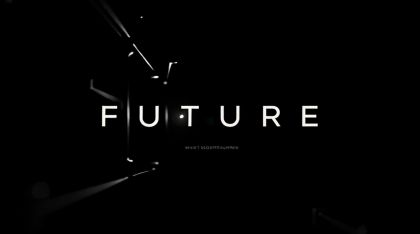
WHERE YOU GO WHEN YOU LEAVE / PART 2 OF 3 / FUTURE
white sans on black; use the cracked-glass FUTURE frame
References found


Generation prompt
n/a: existing generated title
Places
bedroom_highrise
a plain high-rise bedroom where the haze arrives first: bare wall, bed, dresser, CRT on a stand, a tall window onto a steel fire escape
Where the archive opens: window panes (vertical, bright): the passage surface; CRT screen; hallway door (Alice 1915 intertitle); open drawer interior (small, insert only)
References: our footage, Atlantis views, found film


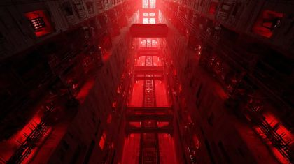
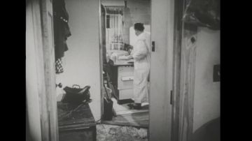

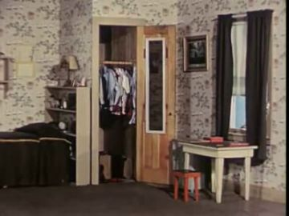
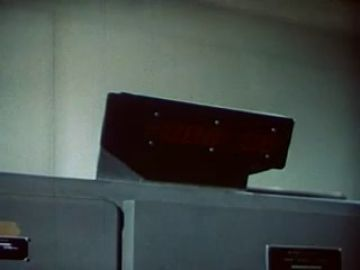
Generation prompt
Dim plain high-rise bedroom at night, no people. Unmade bed at left, plain dresser, an old CRT on a low stand. A tall sash window at right opening onto a black steel fire-escape landing over a teal-lit city. Cold cyan haze, practical lamp light, 35mm, still frame.

fire_escape_night
the landing outside: steel, brick, a long drop, a city that does not look back
Where the archive opens: the bedroom window glass seen from outside, with POET's reflection; the facing tenement wall (archive)
References: our footage, Atlantis views, found film


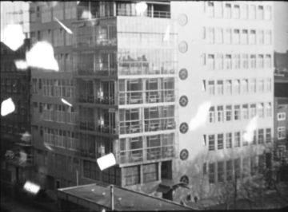
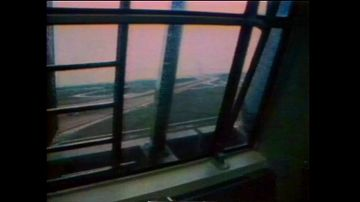
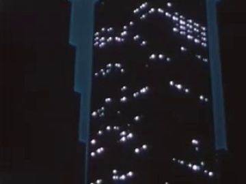
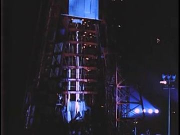
Generation prompt
Empty steel fire-escape landing outside a high-rise window at night, no people. Brick wall, a long drop to city lights in amber haze, rising cloud. 35mm, still.
city_fall_void
the fall between towers: facades streak upward, screens of chaos and escape drift past
Where the archive opens: escape screens (phone/TV bezels); lit windows streaking past
References: our footage, Atlantis views, found film

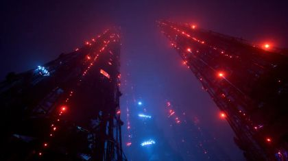


vintage_party
an old-time ballroom in romantic slow motion: chandeliers, waltzers, warm leaks. The party carries on regardless.
Where the archive opens: ballroom doorway or arch at the back; the hole in the floor (what falls below)
References: our footage, Atlantis views, found film


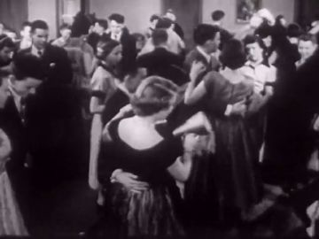
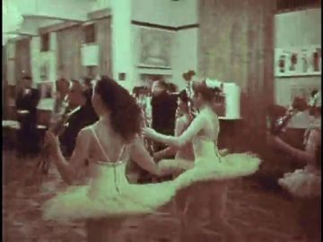
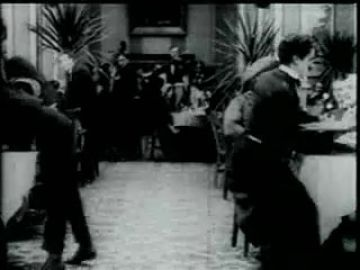
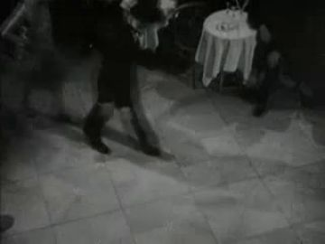
Generation prompt
Empty 1930s ballroom with chandeliers and a herringbone parquet floor, no people, warm light leaks, soft halation, black-and-white film grain, still frame.
No plate yet.
black
pure black with board texture; the dark takes them dot by dot
Where the archive opens:
References: our footage, Atlantis views, found film


Effects
| effect | how, in this cut-out world |
|---|---|
| vape_haze | 3-4 sheets of torn tracing paper on horizontal rails at different depths; the plume itself is a tissue card from EX's hand. Foggy Mountain (2007) as a 15% overlay for drift. |
| haze_fill_left_to_right | slide the tracing-paper rails in from frame left one after another; each layer knocks the window's contrast down. |
| tv_flicker | code: sample the archive clip's luminance and modulate a blue light card on the wall and POET's front edge. |
| window_reflection | POET card mirrored at 20% opacity on the acetate glass layer, offset for parallax. |
| dolly_zoom | scale the window and EX plate down while POET's hand grows; the gap widens as he walks. |
| city_streak_up | long strips of lit-window card (or Communications Primer frames) scroll upward behind the fallers with motion-blur smears painted on the board. |
| falling_words | cut-paper letters from the poem page peel off and fall alongside him. 'Trip on my own words', made literal. |
| light_leaks | archive film burn and bokeh (Moonwalk One / Master Hands) screened over the party in gold. |
| slow_motion | step-print the dancers (hold every pose 4 frames) while POET moves at normal speed. |
| vanish_dissolve | the EX card is sliced into strips that drop away one at a time. |
| floor_hole | parquet card swaps whole → cracked → holed; black behind; POET slides behind the front lip. |
| ink_flood_to_black | black ink bleeding through wet paper, shot flat and keyed as a matte that eats the frame dot by dot. |
| title_card | existing FUTURE cracked-glass frame (gen_bcbc2b554c). |
The puppet passage
his line · 01_L03
“on my own words, falling out of life, and find where you go when you leave.”
the archive answers · Under Western Stars (n.d.)
“You can't leave us out here.”
a hand that stops short · window: the haze-filled window onto the fire escape where the EX stood, back turned
Keep. The hand that stops short reads as a refusal to touch what is leaving. 'You can't leave us out here' (Under Western Stars) answers 'where you go when you leave' from the side of the one left behind. The window is the right surface.
Better. Use the figure-free glass wall gen_a63bb494b1 instead of the scene-book plate, which has a generated man in it. Open the archive in ONE tall pane, bright and large, with EX's back card faint in the next pane. Add a fire-escape rail card outside so the geography holds. Swap the head to 'down' on the answer. Fix the fulcrum note: 'where SHE goes' should be 'where he goes'.
Other lines that could carry one:
- L02 'I look for a way out through the hallways': grip on the door frame; Alice In Wonderland (1915) intertitle 'Doors all round and all locked' opens in the hallway doorway.
- L13 'and photographs, film and fiction that leave me empty': hand opens and the page drops; Appreciating Our Parents (1950) plays in the CRT screen.
- L14 'With your back faced against me, you offer me a new pursuit of happiness': page held out toward EX's back; Beginning to Date (1953) opens in the window pane between them.
- L09 'I failed at protecting you from your own vices': hand stops short of EX's shoulder in the crowd; His Royal Highness (1932) dancers fill the ballroom arch behind.
Scene ideas
- TV inside TV: the CRT card in gen_2a594d9e83 has its screen cut out, and 1959 RCA 21-inch TV Screen plays in it under the opening line 'what we've sold to the world... doesn't exist'.
- Drawers inside drawers: on 'within the drawers' the drawer slides open and Health: Your Posture (1953) fills it, a room full of dressers.
- The facing building is the archive: General Health Habits (1928) tenement escapes stand behind EX's back on the landing. A 1928 fire escape opposite a 2025 one.
- He trips on his own words: letters peel off the poem page and fall with him past view_038's tower canyon. Escape-screen bezels carry gen_0b067a1c52 and Communications Primer windows.
- The forest that calls: gen_366225426b (framed misty forest) floats as a lit window in the void on L05, and EX falls toward it, not away from POET.
- Colour into grey: POET lands in full colour inside His Royal Highness (1932). The painted dancers are silver-grey. Under Western Stars couples turn in step-print while EX's back strips away.
- Quicksand under the haven: Aluminum on the March (1956) powder pour fills the floor hole as he sinks on 'pit beneath the quicksands'.
- Exit through the eye: gen_24ac458d01 iris → gen_9f26db2b7a black pupil ring; push in until the pupil is the black of 02.
References to look for
| what | where to look |
|---|---|
| Lotte Reiniger's silhouette films | hinged-limb timing, one held gesture per beat |
| Jan Švankmajer, Alice (1988) | drawers that open onto other rooms; locked-door maze |
| Roy DeCarava photographs | dark skin held in low light without lifting it to grey; dim interiors |
| Saul Leiter / Edward Hopper 'Night Windows' | figures seen through glass, reflections, a window as the whole stage |
| William Kentridge charcoal animation | erasure trails as haze; layered paper atmospherics |
| archive: drug-education and TV films | 'narcotics film 1967', 'drug abuse education 1970', 'television set commercial 1950s', 'teen party 1960s' for escape screens |
| archive: ballroom newsreels | 'ballroom dancing 1930s', 'dance marathon', 'country club party home movie' in colour for light leaks |
Our footage for this poem
The 20 generated clips and 8 Atlantis views closest to the poem (CLIP, image against its treatment and lines).


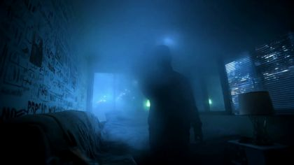

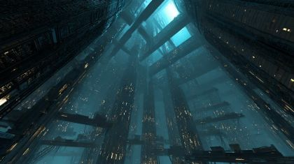


The kit
| status | kind | item | source |
|---|---|---|---|
| need | body | POET falling / tumbling / crouch replacements | add to poet.black_tshirt.replacements |
| need | fx | tracing-paper haze rigs | to make |
| need | fx | falling letters | cut from poem page card |
| need | prop | poem page (3 states) | to generate |
| need | prop | vape pen + plume | to generate |
| need | prop | dresser + drawer | to generate |
| need | prop | fire-escape rail + window frame | to generate |
| need | prop | escape-screen bezels | to generate; fill from gen_0b067a1c52 |
| need | prop | parquet with hole | to generate |
| need | sound | drawer click, fire-escape steel creak, vape crackle | to find |
| partial | body | POET black tee body x4 views | existing pack layouts poet.black_tshirt.body.*; paint |
| partial | body | EX back + threequarter_back, olive bomber | ex.ex_jacket.body.*; paint |
| partial | body | vintage party couple + spinner, grey palette | party.vintage_party packs; paint in grey |
| partial | hand | POET hands: grip(page), stopped-open, claw, flat_push | poet.black_tshirt.hands |
| partial | hand | EX pinch(vape) | ex.ex_jacket.hands |
| partial | head | POET heads: sad, listening, strain, afraid, surprised, down | poet.black_tshirt.heads + face packs |
| partial | prop | CRT with open screen | gen_2a594d9e83 ref; to generate card |
| partial | set | bedroom plate, figure-free | assets/gen_a63bb494b1.jpg (no fire escape) |
| partial | set | fire escape plate | assets/gen_5ab5a5046a.jpg + assets/gen_2fe0abc837.jpg |
| partial | set | ballroom | assets/arch_32d6cbbc-5014.jpg (figures in it) |
| have | fx | FUTURE title | assets/gen_bcbc2b554c.jpg |
| have | head | EX back-of-head card | ex.ex_jacket.heads (panel B) |
| have | set | fall canyon | assets/view_038.jpg |
| have | sound | Under Western Stars line 'You can't leave us out here' | archive clip eb6b9643, 28.48-29.64 |